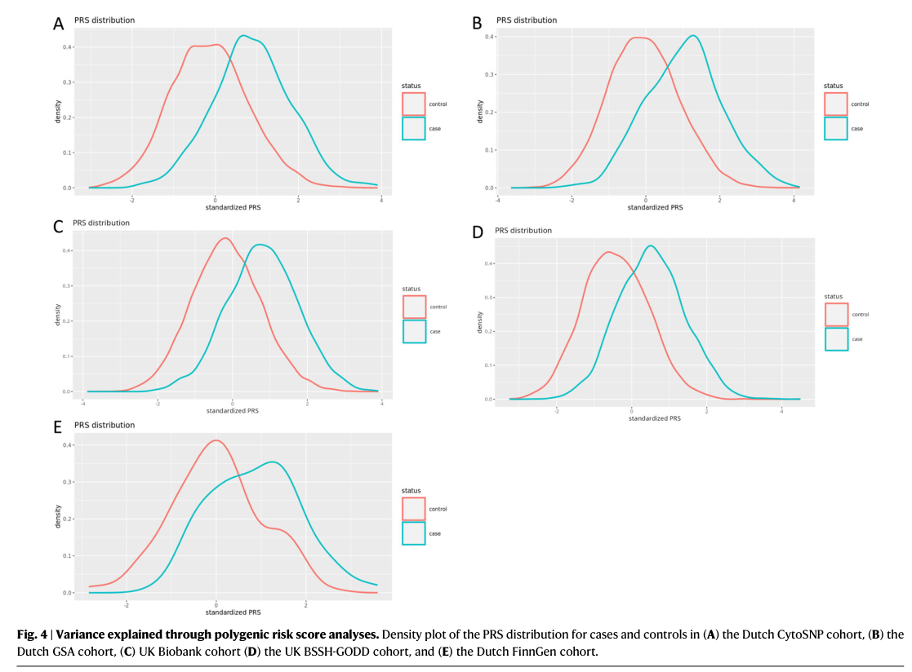

A chronic, progressive fibroproliferative disorder of the palmar and digital fascia in which myofibroblast-rich nodules and collagen cords form in the palmar aponeurosis, producing permanent flexion contractures of the fingers (most often the ring and little fingers). It is a highly heritable, polygenic complex trait with a strong predilection for older men of Northern European descent, and is associated with diabetes, alcohol use, smoking, and manual labor.
Ask a research question about Dupuytren Contracture. OpenScientist will conduct autonomous deep research using the Disorder Mechanisms Knowledge Base and PubMed literature (typically 10-30 minutes).
Do not include personal health information in your question. Questions and results are cached in your browser's local storage.
name: Dupuytren Contracture
creation_date: "2026-05-27T00:00:00Z"
category: Complex
disease_term:
preferred_term: Dupuytren contracture
term:
id: MONDO:0006345
label: palmar fibromatosis
description: >-
A chronic, progressive fibroproliferative disorder of the palmar and digital
fascia in which myofibroblast-rich nodules and collagen cords form in the
palmar aponeurosis, producing permanent flexion contractures of the fingers
(most often the ring and little fingers). It is a highly heritable, polygenic
complex trait with a strong predilection for older men of Northern European
descent, and is associated with diabetes, alcohol use, smoking, and manual
labor.
synonyms:
- Dupuytren disease
- palmar fibromatosis
- Viking disease
- morbus Dupuytren
parents:
- Connective Tissue Disease
- Fibromatosis
pathophysiology:
- name: Fascial Microinjury and Aberrant Wound Healing
description: >-
Repetitive microtrauma, local ischemia, and oxidative stress in the palmar
aponeurosis initiate a dysregulated wound-healing response. Free radical
generation and hypoxia in the palmar fascia are thought to trigger the
fibroproliferative cascade rather than restoring normal tissue.
conforms_to: "fibrotic_response#Tissue Injury"
role: trigger
locations:
- preferred_term: palmar aponeurosis
term:
id: UBERON:4200041
label: aponeurosis palmaris
biological_processes:
- preferred_term: wound healing
term:
id: GO:0042060
label: wound healing
modifier: DYSREGULATED
evidence:
- reference: PMID:21060335
reference_title: "Scientific understanding and clinical management of Dupuytren disease."
supports: SUPPORT
evidence_source: OTHER
snippet: >-
DD has been variously attributed to the presence of oxygen free radicals,
trauma to the palmar fascia, or aberrant immune responses with altered
antigen presentation, or to interactions between these proposed mechanisms.
explanation: >-
This review attributes Dupuytren disease initiation to oxygen free
radicals and trauma to the palmar fascia, supporting microinjury and
oxidative stress as triggers. Evidence source is OTHER because this is a
narrative review synthesizing multiple study types.
downstream:
- target: Profibrotic Signaling and Inflammatory Amplification
- name: Profibrotic Signaling and Inflammatory Amplification
description: >-
Locally produced TGF-beta and other growth factors, together with immune
cell infiltration, amplify the fibrotic response and drive resident
fibroblasts toward an activated, contractile phenotype. Aberrant
Wnt/beta-catenin signaling is a hallmark molecular feature of Dupuytren
tissue, and genome-wide association studies additionally implicate
developmental Hedgehog and Notch signaling.
conforms_to: "fibrotic_response#Inflammatory Recruitment and Amplification"
role: amplifier
cell_types:
- preferred_term: macrophage
term:
id: CL:0000235
label: macrophage
biological_processes:
- preferred_term: Wnt signaling pathway
term:
id: GO:0016055
label: Wnt signaling pathway
modifier: INCREASED
- preferred_term: inflammatory response
term:
id: GO:0006954
label: inflammatory response
modifier: INCREASED
evidence:
- reference: PMID:21732829
reference_title: "Wnt signaling and Dupuytren's disease."
supports: SUPPORT
evidence_source: HUMAN_CLINICAL
snippet: >-
The fact that six of these nine loci harbor genes encoding proteins in the
Wnt-signaling pathway suggests that aberrations in this pathway are key to
the process of fibromatosis in Dupuytren's disease.
explanation: >-
This genome-wide association study concludes that aberrant Wnt signaling
is central to the fibromatosis process in Dupuytren disease, supporting
Wnt-pathway dysregulation as an amplifying mechanism.
- reference: PMID:38172110
reference_title: "A genome-wide association meta-analysis implicates Hedgehog and Notch signaling in Dupuytren's disease."
supports: SUPPORT
evidence_source: HUMAN_CLINICAL
snippet: >-
Gene prioritization implicated the Hedgehog and Notch signaling pathways.
explanation: >-
This 2024 GWAS meta-analysis prioritizes Hedgehog and Notch developmental
signaling pathways, supporting their role alongside Wnt in the profibrotic
signaling that amplifies Dupuytren disease.
- reference: PMID:21060335
reference_title: "Scientific understanding and clinical management of Dupuytren disease."
supports: SUPPORT
evidence_source: OTHER
snippet: >-
The presence of immune cells and related phenomena in DD-affected tissue
suggests that DD is possibly immune-related.
explanation: >-
This review notes immune cell infiltration in affected tissue, supporting
an inflammatory amplification component. Evidence source is OTHER because
this is a narrative review.
downstream:
- target: Myofibroblast Activation and Contraction
- name: Myofibroblast Activation and Contraction
description: >-
Palmar fibroblasts transdifferentiate into alpha-smooth-muscle-actin-positive
myofibroblasts under the influence of TGF-beta. These contractile cells
populate the proliferative nodules and generate the active contractile force
that, together with collagen deposition, draws the digits into flexion.
conforms_to: "fibrotic_response#Mesenchymal Cell Activation"
role: central_effector
cell_types:
- preferred_term: fibroblast
term:
id: CL:0000057
label: fibroblast
- preferred_term: myofibroblast
term:
id: CL:0000186
label: myofibroblast cell
biological_processes:
- preferred_term: TGF-beta receptor signaling
term:
id: GO:0007179
label: transforming growth factor beta receptor signaling pathway
modifier: INCREASED
evidence:
- reference: PMID:21060335
reference_title: "Scientific understanding and clinical management of Dupuytren disease."
supports: SUPPORT
evidence_source: OTHER
snippet: >-
Mechanically, digital contracture is caused by myofibroblasts in the DD
palmar fascia; however, the exact origin of this cell type remains unknown.
explanation: >-
This review identifies myofibroblasts in the palmar fascia as the cells
mechanically responsible for the digital contracture, supporting
myofibroblast activation and contraction as the central effector. Evidence
source is OTHER because this is a narrative review.
- reference: PMID:39744282
reference_title: "Dupuytren's Contracture: A Review of the Literature."
supports: SUPPORT
evidence_source: OTHER
snippet: >-
The underlying mechanisms involve complex cellular processes, particularly
the role of transforming growth factor-beta in promoting fibroblast
activity and collagen buildup.
explanation: >-
This review identifies transforming growth factor-beta as the key driver
of fibroblast activity, supporting TGF-beta-driven myofibroblast
activation. Evidence source is OTHER because this is a narrative review.
downstream:
- target: Excessive Collagen Deposition and Cord Formation
- name: Excessive Collagen Deposition and Cord Formation
description: >-
Activated myofibroblasts deposit excessive extracellular matrix with a
characteristic increase in type III collagen relative to type I. As cellular
nodules mature into relatively acellular collagen-rich cords, the contracted
matrix becomes a fixed structural deformity along the digital rays.
conforms_to: "fibrotic_response#Excessive ECM Deposition"
role: effector
cell_types:
- preferred_term: myofibroblast
term:
id: CL:0000186
label: myofibroblast cell
biological_processes:
- preferred_term: extracellular matrix organization
term:
id: GO:0030198
label: extracellular matrix organization
modifier: INCREASED
- preferred_term: collagen biosynthetic process
term:
id: GO:0032964
label: collagen biosynthetic process
modifier: INCREASED
evidence:
- reference: PMID:39744282
reference_title: "Dupuytren's Contracture: A Review of the Literature."
supports: SUPPORT
evidence_source: OTHER
snippet: >-
The underlying mechanisms involve complex cellular processes, particularly
the role of transforming growth factor-beta in promoting fibroblast
activity and collagen buildup.
explanation: >-
This review links TGF-beta-driven fibroblast activity to collagen
buildup, supporting excessive collagen/ECM deposition as the matrix
effector step. Evidence source is OTHER because this is a narrative review.
downstream:
- target: Digital Flexion Contracture and Hand Dysfunction
- name: Digital Flexion Contracture and Hand Dysfunction
description: >-
Mature collagen cords spanning the metacarpophalangeal and proximal
interphalangeal joints shorten and tether the fingers in fixed flexion,
impairing extension, grip, and hand function. The deformity is progressive
and, once established, does not spontaneously resolve.
conforms_to: "fibrotic_response#Architectural Distortion and Organ Dysfunction"
role: consequence
locations:
- preferred_term: palmar part of manus
term:
id: UBERON:0008878
label: palmar part of manus
evidence:
- reference: PMID:21060335
reference_title: "Scientific understanding and clinical management of Dupuytren disease."
supports: SUPPORT
evidence_source: OTHER
snippet: >-
Dupuytren disease (DD) is a fibroproliferative disorder of unknown
etiology that often results in shortening and thickening of the palmar
fascia, leading to permanent and irreversible flexion contracture of the
digits.
explanation: >-
This review directly links shortening and thickening of the palmar fascia
to permanent flexion contracture of the digits, the defining functional
consequence. Evidence source is OTHER because this is a narrative review.
phenotypes:
- category: Musculoskeletal
name: Dupuytren contracture
description: >-
Progressive flexion contracture of the fingers caused by fibrotic thickening
of the palmar fascia; the defining clinical feature of the disease.
phenotype_term:
preferred_term: Dupuytren contracture
term:
id: HP:0005679
label: Dupuytren contracture
clinical_course: PROGRESSIVE
evidence:
- reference: PMID:21732829
reference_title: "Wnt signaling and Dupuytren's disease."
supports: SUPPORT
evidence_source: HUMAN_CLINICAL
snippet: >-
Dupuytren's disease is a benign fibromatosis of the hands and fingers that
leads to flexion contractures.
explanation: >-
This study characterizes Dupuytren disease as a benign fibromatosis of the
hands and fingers leading to flexion contractures, supporting the defining
phenotype.
- category: Musculoskeletal
name: Finger flexion contracture
description: >-
Fixed flexion of the digits, most commonly the ring (4th) and little (5th)
fingers, due to contracture of the digital cords.
phenotype_term:
preferred_term: Flexion contracture of finger
term:
id: HP:0012785
label: Flexion contracture of finger
evidence:
- reference: PMID:39744282
reference_title: "Dupuytren's Contracture: A Review of the Literature."
supports: SUPPORT
evidence_source: OTHER
snippet: >-
Dupuytren's contracture is a chronic condition that affects the palmar
fascia, leading to progressive flexion of the fingers, particularly the
ring and little fingers.
explanation: >-
This review supports progressive flexion of the fingers, particularly the
ring and little fingers, as the core deformity. Evidence source is OTHER
because this is a narrative review.
- category: Integumentary
name: Palmar nodules
description: >-
Firm subcutaneous nodules in the palm, often the earliest clinical sign,
representing myofibroblast-rich proliferative lesions.
phenotype_term:
preferred_term: Palmar fibromatosis nodule
notes: >-
HPO lacks a dedicated term for the early palmar fibroproliferative
nodule, which is clinically distinct from the flexion contracture
captured by HP:0005679 (Dupuytren contracture). HPO NTR needed for
"palmar fibromatosis nodule" so the proliferative-phase lesion can be
annotated separately from the contracture phenotype.
- category: Integumentary
name: Knuckle pads
description: >-
Fibrous thickenings over the dorsal proximal interphalangeal joints
(Garrod nodes/pads), associated with Dupuytren diathesis.
phenotype_term:
preferred_term: Knuckle pad
term:
id: HP:0032541
label: Knuckle pad
- category: Musculoskeletal
name: Impaired hand function
description: >-
Loss of finger extension and weakened grip impair activities requiring a
flat hand or full grasp.
phenotype_term:
preferred_term: Weak grip
term:
id: HP:0033466
label: Weak grip
prevalence:
- population: Older men of Northern European descent
notes: >-
Dupuytren disease shows a strong demographic predilection, with highest
prevalence in older men of Northern European ancestry; prevalence increases
markedly with age.
evidence:
- reference: PMID:39744282
reference_title: "Dupuytren's Contracture: A Review of the Literature."
supports: SUPPORT
evidence_source: OTHER
snippet: >-
Commonly seen in older men of Northern European descent, Dupuytren's can
significantly impair hand function as contractures develop.
explanation: >-
This review establishes the predominant demographic (older men of
Northern European descent). Evidence source is OTHER because this is a
narrative review.
progression:
- phase: Variable progression
notes: >-
Disease course is variable; high recurrence after treatment and variability
in progression are central management challenges, with younger onset and
strong family history predicting more aggressive disease.
evidence:
- reference: PMID:39744282
reference_title: "Dupuytren's Contracture: A Review of the Literature."
supports: SUPPORT
evidence_source: OTHER
snippet: >-
Challenges in management include high recurrence rates and variability in
disease progression, emphasizing the need for standardized assessment
protocols and innovative therapeutic approaches.
explanation: >-
This review documents high recurrence and variability in disease
progression. Evidence source is OTHER because this is a narrative review.
genetic:
- name: SFRP4
association: Risk Factor
gene_term:
preferred_term: SFRP4
term:
id: hgnc:10778
label: SFRP4
notes: >-
SFRP4 (secreted frizzled-related protein 4) is a Wnt-pathway modulator and
carries the strongest single-locus association with Dupuytren disease
susceptibility (rs16879765, P=5.6e-39, odds ratio 1.98) in the original
GWAS, consistent with dysregulated Wnt/beta-catenin signaling as a central
driver of the fibroproliferative phenotype.
evidence:
- reference: PMID:21732829
reference_title: "Wnt signaling and Dupuytren's disease."
supports: SUPPORT
evidence_source: HUMAN_CLINICAL
snippet: >-
Six of these loci contain genes known to be involved in the Wnt-signaling
pathway: WNT4 (rs7524102) (P=2.8×10(-9); odds ratio, 1.28), SFRP4
(rs16879765) (P=5.6×10(-39); odds ratio, 1.98), WNT2 (rs4730775)
(P=3.0×10(-8); odds ratio, 0.83), RSPO2 (rs611744) (P=7.9×10(-15); odds
ratio, 0.75), SULF1 (rs2912522) (P=2.0×10(-13); odds ratio, 0.72), and
WNT7B (rs6519955) (P=3.2×10(-33); odds ratio, 1.54).
explanation: >-
This genome-wide association study reports SFRP4 (rs16879765) as the
strongest Wnt-pathway susceptibility locus for Dupuytren disease (odds
ratio 1.98, P=5.6e-39), substantially exceeding the WNT7B effect size.
- name: WNT7B
association: Associated
gene_term:
preferred_term: WNT7B
term:
id: hgnc:12787
label: WNT7B
notes: >-
Dupuytren disease is a highly heritable, polygenic complex trait. Genome-wide
association studies implicate multiple Wnt-signaling pathway genes (including
WNT7B) in susceptibility, consistent with the central role of dysregulated
Wnt/beta-catenin signaling in the pathophysiology.
evidence:
- reference: PMID:21732829
reference_title: "Wnt signaling and Dupuytren's disease."
supports: SUPPORT
evidence_source: HUMAN_CLINICAL
snippet: >-
Six of these loci contain genes known to be involved in the Wnt-signaling
pathway: WNT4 (rs7524102) (P=2.8×10(-9); odds ratio, 1.28), SFRP4
(rs16879765) (P=5.6×10(-39); odds ratio, 1.98), WNT2 (rs4730775)
(P=3.0×10(-8); odds ratio, 0.83), RSPO2 (rs611744) (P=7.9×10(-15); odds
ratio, 0.75), SULF1 (rs2912522) (P=2.0×10(-13); odds ratio, 0.72), and
WNT7B (rs6519955) (P=3.2×10(-33); odds ratio, 1.54).
explanation: >-
This genome-wide association study identifies WNT7B among six Wnt-pathway
loci associated with Dupuytren disease susceptibility (WNT7B rs6519955,
odds ratio 1.54).
- reference: PMID:38172110
reference_title: "A genome-wide association meta-analysis implicates Hedgehog and Notch signaling in Dupuytren's disease."
supports: SUPPORT
evidence_source: HUMAN_CLINICAL
snippet: >-
Dupuytren's disease (DD) is a highly heritable fibrotic disorder of the
hand with incompletely understood etiology. A number of genetic loci,
including Wnt signaling members, have been previously identified.
explanation: >-
This 2024 meta-analysis confirms Dupuytren disease is highly heritable and
that Wnt-signaling members are among previously identified susceptibility
loci, supporting the genetic basis and Wnt involvement.
environmental:
- name: Cigarette smoking
description: >-
Smoking is an established risk factor, possibly through microvascular
occlusion and local ischemia of the palmar fascia.
evidence:
- reference: PMID:21060335
reference_title: "Scientific understanding and clinical management of Dupuytren disease."
supports: SUPPORT
evidence_source: OTHER
snippet: >-
Several environmental risk factors (some considered controversial) include
smoking, alcohol intake, trauma, diabetes, epilepsy and use of
anticonvulsant drugs, and exposure to vibration.
explanation: >-
This review lists smoking among the environmental risk factors for
Dupuytren disease. Evidence source is OTHER because this is a narrative
review.
- name: Alcohol consumption
description: >-
Chronic alcohol use is associated with increased prevalence and severity of
Dupuytren disease.
evidence:
- reference: PMID:21060335
reference_title: "Scientific understanding and clinical management of Dupuytren disease."
supports: SUPPORT
evidence_source: OTHER
snippet: >-
Several environmental risk factors (some considered controversial) include
smoking, alcohol intake, trauma, diabetes, epilepsy and use of
anticonvulsant drugs, and exposure to vibration.
explanation: >-
This review lists alcohol intake among the environmental risk factors for
Dupuytren disease. Evidence source is OTHER because this is a narrative
review.
- name: Diabetes mellitus
description: >-
Diabetes is associated with an increased prevalence of Dupuytren disease,
typically with a milder, more radial distribution.
evidence:
- reference: PMID:21060335
reference_title: "Scientific understanding and clinical management of Dupuytren disease."
supports: SUPPORT
evidence_source: OTHER
snippet: >-
Several environmental risk factors (some considered controversial) include
smoking, alcohol intake, trauma, diabetes, epilepsy and use of
anticonvulsant drugs, and exposure to vibration.
explanation: >-
This review lists diabetes among the environmental risk factors for
Dupuytren disease. Evidence source is OTHER because this is a narrative
review.
- name: Manual labor and vibration exposure
description: >-
Repetitive manual work and hand-transmitted vibration have been proposed as
occupational risk factors.
evidence:
- reference: PMID:21060335
reference_title: "Scientific understanding and clinical management of Dupuytren disease."
supports: SUPPORT
evidence_source: OTHER
snippet: >-
Several environmental risk factors (some considered controversial) include
smoking, alcohol intake, trauma, diabetes, epilepsy and use of
anticonvulsant drugs, and exposure to vibration.
explanation: >-
This review lists exposure to vibration among the environmental risk
factors for Dupuytren disease. Evidence source is OTHER because this is a
narrative review.
treatments:
- name: Collagenase clostridium histolyticum injection
description: >-
Intralesional injection of clostridial collagenase enzymatically disrupts
the collagen cord, allowing subsequent manipulation to break the contracture
without open surgery.
treatment_term:
preferred_term: collagenase clostridium histolyticum therapy
term:
id: NCIT:C15986
label: Pharmacotherapy
therapeutic_agent:
- preferred_term: collagenase clostridium histolyticum
term:
id: NCIT:C185860
label: Collagenase Clostridium histolyticum
evidence:
- reference: PMID:19726771
reference_title: "Injectable collagenase clostridium histolyticum for Dupuytren's contracture."
supports: SUPPORT
evidence_source: HUMAN_CLINICAL
snippet: >-
Collagenase clostridium histolyticum significantly reduced contractures
and improved the range of motion in joints affected by advanced
Dupuytren's disease.
explanation: >-
The CORD I randomized, double-blind, placebo-controlled trial demonstrates
that collagenase injection significantly reduces contractures and improves
range of motion in Dupuytren disease.
- reference: PMID:21060335
reference_title: "Scientific understanding and clinical management of Dupuytren disease."
supports: SUPPORT
evidence_source: OTHER
snippet: >-
Nonsurgical correction of DD contractures can be achieved by Clostridium
histolyticum collagenase injection, although the long-term safety and
recurrence rate of this procedure requires further assessment.
explanation: >-
This review supports collagenase clostridium histolyticum injection as a
nonsurgical correction of Dupuytren contractures while noting uncertainty
about long-term recurrence. Evidence source is OTHER because this is a
narrative review.
- name: Percutaneous needle fasciotomy
description: >-
A minimally invasive procedure that uses a needle to divide the contracted
cord percutaneously, correcting the deformity with rapid recovery but higher
recurrence than open surgery.
treatment_term:
preferred_term: surgical procedure
term:
id: MAXO:0000004
label: surgical procedure
evidence:
- reference: PMID:39744282
reference_title: "Dupuytren's Contracture: A Review of the Literature."
supports: SUPPORT
evidence_source: OTHER
snippet: >-
nonsurgical options like collagenase injections and needle aponeurotomy
are effective for early stages but often have high recurrence rates.
explanation: >-
This review supports needle aponeurotomy (percutaneous needle fasciotomy)
as an effective option for early-stage disease while noting high
recurrence. Evidence source is OTHER because this is a narrative review.
- name: Surgical fasciectomy
description: >-
Open surgical excision of the diseased palmar fascia, the traditional
treatment for advanced contractures, offering durable correction at the cost
of greater morbidity and recovery time.
treatment_term:
preferred_term: surgical procedure
term:
id: MAXO:0000004
label: surgical procedure
evidence:
- reference: PMID:21060335
reference_title: "Scientific understanding and clinical management of Dupuytren disease."
supports: SUPPORT
evidence_source: OTHER
snippet: >-
The mainstay of treatment is surgical release or excision of the affected
palmodigital tissue, but symptoms often recur.
explanation: >-
This review identifies surgical excision of the affected palmodigital
tissue (fasciectomy) as the mainstay of treatment, while noting frequent
recurrence. Evidence source is OTHER because this is a narrative review.
- name: Radiotherapy for early disease
description: >-
Low-dose external beam radiotherapy applied to early-stage nodular disease
in an attempt to slow progression before fixed contractures develop; the
supporting evidence base remains limited.
treatment_term:
preferred_term: radiation therapy
term:
id: MAXO:0000014
label: radiation therapy
evidence:
- reference: PMID:28490266
reference_title: "Radiotherapy in Dupuytren's disease: a systematic review of the evidence."
supports: PARTIAL
evidence_source: OTHER
snippet: >-
Radiotherapy has been advocated as an alternative treatment in early
Dupuytren's disease.
explanation: >-
This systematic review reports that radiotherapy is advocated for early
Dupuytren disease but concludes the evidence base is limited, so support
is partial. Evidence source is OTHER because this is a systematic review.
histopathology:
- name: Proliferative phase (cellular nodule)
description: >-
The earliest classically described histologic stage of Dupuytren disease,
characterized by hypercellular nodules composed of immature fibroblasts
and proliferating myofibroblasts arranged in a whorled or storiform
pattern, with abundant cell-cell and cell-matrix interactions and
relatively little organized extracellular collagen.
context: Early-stage Dupuytren palmar fascia; classical Luck (1959) three-phase nomenclature
notes: >-
Notes-only entry. The three-phase histopathologic progression of Dupuytren
disease (proliferative nodule -> involutional/transitional -> residual
acellular cord) is a foundational descriptive classification originally
formalized by Luck JV (J Bone Joint Surg Am, 1959) and is widely
reproduced in surgical and pathology textbooks. A directly quotable
PMID-anchored abstract that captures all three phases in a single
snippet was not identified during initial curation, so per the CLAUDE.md
SOP this finding is recorded as notes without an evidence block. Future
curation passes should add evidence items as quotable secondary sources
are identified.
- name: Involutional phase (transitional)
description: >-
The intermediate histologic stage of Dupuytren disease, in which
myofibroblasts align along lines of mechanical tension and deposit
progressively more type III collagen, producing linear organization of
cells and matrix. Clinical contracture begins to emerge as the tissue
becomes more fibrous and less cellular than in the proliferative phase.
context: Mid-stage Dupuytren palmar fascia; classical Luck (1959) three-phase nomenclature
notes: >-
Notes-only entry. See the Proliferative phase finding for the rationale
for omitting an evidence block in this initial curation pass.
- name: Residual phase (acellular collagen cord)
description: >-
The late histologic stage of Dupuytren disease, characterized by
relatively acellular, dense, type-I-collagen-rich cords with sparse
mature spindle-shaped fibrocytes. The cord is the mechanically
contracted lesion responsible for the established finger flexion
deformity that brings patients to clinical attention and is the
structure targeted by needle aponeurotomy, collagenase injection, and
open fasciectomy.
context: Late-stage Dupuytren palmar fascia; classical Luck (1959) three-phase nomenclature
notes: >-
Notes-only entry. See the Proliferative phase finding for the rationale
for omitting an evidence block in this initial curation pass.
datasets: []
Dupuytren contracture is a chronic fibroproliferative/fibrotic disorder of the palmar fascia (palmar aponeurosis) that forms palmar nodules and cords and can progress to fixed flexion contractures, classically affecting the ring and little fingers and impairing hand function. (khaliq2024dupuytrenscontracturea pages 1-2)
Recent high-impact genetic studies (2023–2024) reinforce that Dupuytren disease is highly heritable and polygenic, with risk loci converging on fibroblast/myofibroblast biology and pro-fibrotic signaling (e.g., TGF-β; developmental pathways Hedgehog/Notch; cell–matrix adhesion). (riesmeijer2024agenomewideassociation pages 1-2, riesmeijer2024agenomewideassociation pages 2-4)
Clinically, minimally invasive treatments (collagenase clostridium histolyticum injection and percutaneous needle aponeurotomy/fasciotomy) are widely used, especially for earlier disease, but recurrence is common; surgery (limited fasciectomy/dermofasciectomy) remains standard for advanced contracture. (khaliq2024dupuytrenscontracturea pages 4-5, khaliq2024dupuytrenscontracturea pages 5-6)
Dupuytren’s contracture is described as a “chronic fibroproliferative disease of the palmar fascia” causing progressive flexion deformities via development of fibrotic cords. (khaliq2024dupuytrenscontracturea pages 1-2)
| Item | Value | URL / year | Evidence |
|---|---|---|---|
| Preferred disease name | Dupuytren contracture | Cureus review, 2024: https://doi.org/10.7759/cureus.74945 | (khaliq2024dupuytrenscontracturea pages 1-2) |
| Alternate disease name | Dupuytren disease | ClinicalTrials.gov records, 2024: https://clinicaltrials.gov/study/NCT06321991 ; 2024: https://clinicaltrials.gov/study/NCT07470684 | (NCT06321991 chunk 2, NCT07470684 chunk 2) |
| Other name variants / synonyms in available evidence | Dupuytren's contracture; Dupuytren's disease; DD; M. Dupuytren; Morbus Dupuytren | ClinicalTrials.gov records, 2013-2024: https://clinicaltrials.gov/study/NCT01876498 ; https://clinicaltrials.gov/study/NCT06321991 | (NCT06321991 chunk 2, NCT01876498 chunk 1) |
| ICD-10 code | M72.0 (Palmar fascial fibromatosis / Dupuytren contracture in hospital coding context) | BMC Musculoskelet Disord, 2011: https://doi.org/10.1186/1471-2474-12-73 | (khaliq2024dupuytrenscontracturea pages 6-7) |
| MeSH term | Dupuytren Contracture | ClinicalTrials.gov MeSH mapping, 2021-2025: https://clinicaltrials.gov/study/NCT04874870 ; https://clinicaltrials.gov/study/NCT06956027 | (NCT04874870 chunk 2, NCT06956027 chunk 2) |
| MeSH ID | D004387 | ClinicalTrials.gov MeSH mapping, 2017-2024: https://clinicaltrials.gov/study/NCT03192020 ; https://clinicaltrials.gov/study/NCT06321991 | (NCT03192020 chunk 3, NCT06321991 chunk 2) |
| Typical affected anatomy | Palmar fascia / palmar aponeurosis of the hand; progressive flexion contractures, especially ring and little fingers; MCP and PIP joints commonly involved | Cureus review, 2024: https://doi.org/10.7759/cureus.74945 ; Cureus meta-analysis, 2024: https://doi.org/10.7759/cureus.53147 | (khaliq2024dupuytrenscontracturea pages 1-2, alhebshi2024comparingcomplicationsand pages 1-2) |
| Disease classification note | Chronic fibroproliferative / fibrotic disorder of the palmar fascia | Cureus review, 2024: https://doi.org/10.7759/cureus.74945 | (khaliq2024dupuytrenscontracturea pages 1-2) |
| MONDO / Orphanet / OMIM in available evidence | Not reported in the retrieved evidence/context provided for this task; would require external ontology lookup beyond available context | Based on available retrieved papers/trial records only, 2013-2025 | (NCT06321991 chunk 2, khaliq2024dupuytrenscontracturea pages 4-5, NCT06142929 chunk 2) |
Table: This table summarizes the core identifiers and naming conventions for Dupuytren contracture/disease from the retrieved evidence. It also flags that MONDO, Orphanet, and OMIM identifiers were not present in the available context and would need dedicated ontology lookup.
Notes/limitations: MONDO, Orphanet, and OMIM identifiers were not present in the retrieved full-text evidence for this run; adding these would require dedicated ontology lookup beyond the current context. (NCT06321991 chunk 2, khaliq2024dupuytrenscontracturea pages 4-5)
Evidence in this report comes from aggregated resources: peer-reviewed reviews/meta-analyses and large biobank GWAS/meta-analyses; administrative coding studies (England HES) are also used for utilization/costs. (gerber2011dupuytrenscontracturea pages 1-2, riesmeijer2024agenomewideassociation pages 1-2)
Dupuytren disease is multifactorial with strong genetic predisposition plus environmental/occupational and lifestyle contributions. A 2024 meta-GWAS frames the disorder as heritable and fibrotic, and also cites established non-genetic risk factors (age, male sex, smoking, alcohol, manual work). (riesmeijer2024agenomewideassociation pages 1-2)
2024 large meta-GWAS (primary): - Design: 11,320 cases, 47,023 controls; 8,123,121 variants. (riesmeijer2024agenomewideassociation pages 1-2) - Findings: 85 genome-wide significant SNPs in 56 loci (11 novel); 24 additional secondary signals in 12 known loci; loci/PRS explain 13.3–38.1% of disease variance (cohort-dependent). (riesmeijer2024agenomewideassociation pages 1-2, riesmeijer2024agenomewideassociation pages 2-4) - Genetic correlations: frozen shoulder r=0.30 (p=1.9×10−6); BMI r=−0.14 (p=1.2×10−8); HDL r=0.12 (p=3.6×10−5). (riesmeijer2024agenomewideassociation pages 2-4)
2023 biobank meta-analysis (Neandertal-derived risk factors): - Design: 7,871 cases, 645,880 controls. (agren2023majorgeneticrisk pages 1-2) - Findings: 61 genome-wide significant loci; 3 loci harbor Neandertal-derived risk alleles; carrying all 3 Neandertal risk alleles OR=2.83 (95% CI 2.62–3.05). (agren2023majorgeneticrisk pages 2-3)
ECM gene polymorphisms (case-control, Lithuania): - CHST6 rs977987 minor T allele associated with risk (~1.404-fold per minor allele; TT genotype ~1.7× more likely). (samulenas2022theroleof pages 7-8) - MMP14 rs1042704 AA genotype associated with earlier onset and ~2.16-fold increased odds. (samulenas2022theroleof pages 7-8)
Genetic analyses suggest adiposity is “causally protective” and show negative genetic correlation with BMI. (riesmeijer2024agenomewideassociation pages 1-2, riesmeijer2024agenomewideassociation pages 2-4)
A specific GxE interaction was quantified with MMP14 rs1042704 and smoking/manual labor exposures (above), providing direct evidence that inherited susceptibility can amplify occupational/lifestyle risks. (samulenas2022theroleof pages 7-8, samulenas2022theroleof pages 1-2)
Tubiana / TPED staging (total extension deficit across MCP+PIP+DIP): - Stage I: 0–45° - Stage II: 45–90° - Stage III: 90–135° - Stage IV: >135° Also includes Stage N (nodule without contracture). (khaliq2024dupuytrenscontracturea pages 4-5)
PROMs used to quantify patient-perceived function/impact include DASH, Michigan Hand Outcomes Questionnaire, and Patient Evaluation Measure; advanced-disease percutaneous treatment series used quickDASH and URAM. (khaliq2024dupuytrenscontracturea pages 4-5, basile2024challengesandinnovations pages 1-2)
(Provided as ontology suggestions; exact IDs not retrieved in current context) - Palmar nodule - Palmar fibromatosis / palmar cord - Finger flexion contracture - Decreased range of motion of finger joints (MCP/PIP/DIP) - Hand function impairment - Skin dimpling of palm (as described clinically) (khaliq2024dupuytrenscontracturea pages 2-4, khaliq2024dupuytrenscontracturea pages 4-5)
Dupuytren disease is best supported as a polygenic complex trait rather than a single-gene Mendelian disorder, with dozens of loci and substantial variance explained by common variants in large GWAS. (riesmeijer2024agenomewideassociation pages 1-2, riesmeijer2024agenomewideassociation pages 2-4)
The available evidence did not provide extractable epigenetic profiling or population-scale chromosomal abnormality rates. A 2024 genetics review excerpt referenced cytogenetic findings (e.g., trisomy 7/8, loss of Y) but without study-level quantitative support in the retrieved chunk. (aissvarya2024moleculargeneticsof pages 1-2)
Manual work exposures and hand-transmitted vibration are discussed in occupational-health oriented sources; the extracted evidence supports risk elevation for vibration-exposed workers (approximately doubled risk in summarized meta-analytic statements), though this run did not retrieve the underlying primary study effect estimates. (nilssonUnknownyeardupuytrenssjukdomi pages 35-38)
Smoking and alcohol are repeatedly cited as associated factors; smoking has quantified effect sizes in Samulėnas et al. (samulenas2022theroleof pages 7-8, riesmeijer2024agenomewideassociation pages 1-2)
No infectious etiology evidence was found; Dupuytren disease is not presented as an infectious disorder in the retrieved sources. (khaliq2024dupuytrenscontracturea pages 1-2)
A consistent chain across recent reviews: 1) Proliferative phase: fibroblast proliferation and nodule formation. (khaliq2024dupuytrenscontracturea pages 2-4) 2) Myofibroblast differentiation with production of extracellular matrix, “particularly type III collagen,” leading to cord formation. (khaliq2024dupuytrenscontracturea pages 2-4) 3) Involutional phase: myofibroblasts align along stress lines, contract, and shorten cords, producing progressive flexion deformity. (khaliq2024dupuytrenscontracturea pages 2-4, alhebshi2024comparingcomplicationsand pages 1-2) 4) Residual phase: cords become relatively acellular but remain thickened/contracted, yielding fixed contracture. (khaliq2024dupuytrenscontracturea pages 2-4, alhebshi2024comparingcomplicationsand pages 1-2)
Evidence consistently highlights fibroblasts and myofibroblasts as central effector populations, with cell-type prioritization/association in genetics and mechanistic reviews. (riesmeijer2024agenomewideassociation pages 2-4, alhebshi2024comparingcomplicationsand pages 1-2) - Suggested Cell Ontology terms: fibroblast; myofibroblast; macrophage (as implicated immune correlate). (gelbard2021fibroproliferativedisordersand pages 5-6, riesmeijer2024agenomewideassociation pages 2-4)
UBERON suggestions (examples; IDs not retrieved in current context): palmar fascia; hand; finger; metacarpophalangeal joint; proximal interphalangeal joint; distal interphalangeal joint. (khaliq2024dupuytrenscontracturea pages 4-5, khaliq2024dupuytrenscontracturea pages 1-2)
Typical onset is after age 40; prevalence increases with age and may reach ~20% in men over 60 in high-prevalence populations. (khaliq2024dupuytrenscontracturea pages 1-2)
Progression is often insidious and variable; young age at onset and strong family history are associated with more aggressive disease and higher recurrence after treatment. (khaliq2024dupuytrenscontracturea pages 1-2)
| Domain | Finding (with numbers) | Population/study design | Publication date | URL | PMID | Evidence IDs |
|---|---|---|---|---|---|---|
| Epidemiology / demographics | Prevalence reported at ~3%–6% in people of European ancestry; men are 2–7 times more likely to be affected; onset usually after age 40; up to 20% of men >60 years may be affected | Narrative review of current literature | 2024-12 | https://doi.org/10.7759/cureus.74945 | (khaliq2024dupuytrenscontracturea pages 1-2) | |
| Epidemiology / ancestry | Prevalence estimates in a 2023 meta-analysis of 3 biobanks: 0.73% (95% CI 0.72–0.75%) in primarily European ancestry vs 0.13% (95% CI 0.12–0.14%) in primarily African ancestry; authors note up to ~30% of men over 60 in northern Europe | Meta-analysis of 3 biobanks; 7,871 cases, 645,880 controls | 2023-06 | https://doi.org/10.1093/molbev/msad130 | (agren2023majorgeneticrisk pages 1-2, agren2023majorgeneticrisk pages 2-3) | |
| Epidemiology / range in literature | Reported prevalence ranges widely from 2% to 42%, increasing with age and higher in males and Northern European populations | Systematic review/meta-analysis of treatment studies | 2024-01 | https://doi.org/10.7759/cureus.53147 | (alhebshi2024comparingcomplicationsand pages 1-2) | |
| Healthcare burden | In England Hospital Episode Statistics, 75,157 admissions were recorded over 5 years (64,506 analyzed), averaging 12,901 admissions/year | Retrospective administrative database analysis (England NHS HES) | 2011-04 | https://doi.org/10.1186/1471-2474-12-73 | (gerber2011dupuytrenscontracturea pages 1-2, gerber2011dupuytrenscontracturea pages 2-4) | |
| Healthcare burden / utilization | Day-case management increased from 42% to 62% between 2003–2004 and 2007–2008; mean inpatient stay fell from 1.48±1.4 to 1.03±1.2 days; repeat admissions rose from 5.5% to 26.1% | Retrospective administrative database analysis (England NHS HES) | 2011-04 | https://doi.org/10.1186/1471-2474-12-73 | (gerber2011dupuytrenscontracturea pages 1-2, gerber2011dupuytrenscontracturea pages 2-4) | |
| Healthcare burden / costs | Estimated NHS costs for 2010–2011 were £41,576,141; mean per-patient costs £2,885 (day case) and £3,534 (inpatient); procedure-specific costs ranged £2,736–£9,210 | Retrospective administrative database analysis (England NHS HES) | 2011-04 | https://doi.org/10.1186/1471-2474-12-73 | (gerber2011dupuytrenscontracturea pages 1-2, gerber2011dupuytrenscontracturea pages 2-4) | |
| Genetic architecture | Largest recent DD meta-GWAS analyzed 11,320 cases and 47,023 controls across 8,123,121 variants; identified 85 genome-wide significant SNPs in 56 loci, including 11 novel loci and 24 secondary hits in 12 known loci | GWAS meta-analysis | 2024-01 | https://doi.org/10.1038/s41467-023-44451-0 | (riesmeijer2024agenomewideassociation pages 1-2, riesmeijer2024agenomewideassociation pages 2-4) | |
| Genetic architecture | Polygenic risk scores/loci explained 13.3%–38.1% of disease variance across cohorts; prior known variants explained ~11.3%; broad-sense heritability estimated at ~80%, with ~67% attributable to common variants | GWAS meta-analysis with PRS; background synthesis from prior genetic studies | 2024-01 | https://doi.org/10.1038/s41467-023-44451-0 | (riesmeijer2024agenomewideassociation pages 1-2, riesmeijer2024agenomewideassociation pages 2-4) | |
| Genetic architecture / pathways | Gene prioritization implicated Hedgehog and Notch signaling; enrichment also highlighted TGF-β signaling, epithelial cell migration, and cell–matrix adhesion; fibroblasts and myofibroblasts were the most implicated cell populations | GWAS meta-analysis with bioinformatic follow-up | 2024-01 | https://doi.org/10.1038/s41467-023-44451-0 | (riesmeijer2024agenomewideassociation pages 1-2, riesmeijer2024agenomewideassociation pages 2-4, riesmeijer2024agenomewideassociation media 9c685f33) | |
| Genetic architecture / genes | Prioritized genes included TNC, AFAP1, CHSY1, NEDD4, CFDP1; deleterious nonsynonymous variants were highlighted in TMEM81, DSTYK, MMP14, and LDHAL6B | GWAS meta-analysis with fine-mapping and annotation | 2024-01 | https://doi.org/10.1038/s41467-023-44451-0 | (riesmeijer2024agenomewideassociation pages 1-2, riesmeijer2024agenomewideassociation pages 2-4) | |
| Genetic architecture / Neandertal loci | Meta-analysis identified 61 genome-wide significant loci; 3 loci harbor Neandertal-derived alleles. Carrying all 3 Neandertal risk alleles gave combined OR 2.83 (95% CI 2.62–3.05), explaining ~8.4% of heritability attributable to the 61 hits | Meta-analysis of 3 biobanks | 2023-06 | https://doi.org/10.1093/molbev/msad130 | (agren2023majorgeneticrisk pages 2-3, agren2023majorgeneticrisk pages 1-2) | |
| Genetic architecture / specific variants | Key Neandertal-tagged variants included rs17171240 (P=6.4×10^-132), rs652483 (P=9.2×10^-69), rs34017855 (P=1.1×10^-8); strongest Neandertal signal implicated EPDR1 with altered splicing in muscle, adipose, and fibroblasts | Meta-analysis of 3 biobanks with functional follow-up | 2023-06 | https://doi.org/10.1093/molbev/msad130 | (agren2023majorgeneticrisk pages 2-3, agren2023majorgeneticrisk pages 1-2) | |
| Genetic architecture / earlier integrative genomics | Integrative TWAS based on 3,871 cases and 4,686 controls identified 43 tissue-specific gene associations and confirmed significant genetic correlations with BMI, type 2 diabetes, triglycerides, and HDL; strongest earlier GWAS hit was rs16879765 in EPDR1 (P=7.2×10^-41) | GWAS/TWAS integrative analysis | 2019-05 | https://doi.org/10.1002/gepi.22209 | (major2019integrativeanalysisof pages 1-2) | |
| Environmental / lifestyle risk factors | Established non-genetic risks repeatedly cited include advanced age, male sex, cigarette smoking, heavy alcohol consumption, diabetes, and manual work exposure | Review and GWAS background synthesis | 2024-01 to 2024-12 | https://doi.org/10.1038/s41467-023-44451-0 ; https://doi.org/10.7759/cureus.74945 | (riesmeijer2024agenomewideassociation pages 1-2, khaliq2024dupuytrenscontracturea pages 1-2) | |
| Environmental / occupational quantified effects | Smoking increased risk ~2.084-fold; manual labor ~2.6-fold; hard manual labor may require ~10 years to produce disease manifestation | Case-control genetic association study | 2022-04 | https://doi.org/10.3390/genes13050743 | (samulenas2022theroleof pages 7-8, samulenas2022theroleof pages 1-2) | |
| Gene–environment interaction | Smoking plus manual labor yielded a 13.2-fold higher incidence versus neither exposure; adding the MMP14 rs1042704 minor A allele increased likelihood to ~14-fold | Case-control genetic association study with risk-factor analysis | 2022-04 | https://doi.org/10.3390/genes13050743 | (samulenas2022theroleof pages 7-8, samulenas2022theroleof pages 1-2) | |
| Genetic susceptibility polymorphisms | CHST6 rs977987 minor T allele associated with risk (~1.404-fold per minor allele; TT genotype ~1.7× more likely); MMP14 rs1042704 AA genotype associated with earlier onset and ~2.16-fold increased odds; MMP8 rs11225395 not significant | Case-control genetic association study | 2022-04 | https://doi.org/10.3390/genes13050743 | (samulenas2022theroleof pages 7-8, samulenas2022theroleof pages 1-2) | |
| Family history / heredity | Positive family history increased risk ~2.5-fold and was associated with earlier onset; genetic factors were estimated to account for ~80% of causation in cited background literature | Case-control study with literature context | 2022-04 | https://doi.org/10.3390/genes13050743 | (samulenas2022theroleof pages 7-8, samulenas2022theroleof pages 1-2) | |
| Correlated metabolic traits | DD showed significant genetic correlation with frozen shoulder (r=0.30, p=1.9×10^-6), BMI (r=-0.14, p=1.2×10^-8), and HDL (r=0.12, p=3.6×10^-5); lower BMI appears associated with higher DD risk | GWAS meta-analysis | 2024-01 | https://doi.org/10.1038/s41467-023-44451-0 | (riesmeijer2024agenomewideassociation pages 2-4, riesmeijer2024agenomewideassociation pages 1-2) | |
| Prognosis / recurrence tendency | Younger age and strong family history are associated with more aggressive progression and higher recurrence after treatment | Narrative review | 2024-12 | https://doi.org/10.7759/cureus.74945 | (khaliq2024dupuytrenscontracturea pages 1-2) | |
| Prognosis / mortality | In the retrieved evidence set used for this artifact, robust mortality statistics were not directly extractable from full-text evidence; administrative HES data reported 67 deaths (<1%) during admissions but no long-term disease-specific mortality estimate | Administrative database analysis | 2011-04 | https://doi.org/10.1186/1471-2474-12-73 | (gerber2011dupuytrenscontracturea pages 2-4) |
Table: This table summarizes high-value evidence on Dupuytren disease epidemiology, healthcare burden, genetic architecture, environmental risk factors, and prognosis. It is useful as a compact evidence map with quantitative findings, study design context, and citation-ready source links.
Key statistics: - European ancestry prevalence ~3–6% overall; up to ~20% in men >60 in some reports. (khaliq2024dupuytrenscontracturea pages 1-2) - Biobank meta-analysis found higher prevalence in European vs African ancestry (e.g., MVP 0.73% vs 0.13%). (agren2023majorgeneticrisk pages 1-2)
The evidence supports a complex/polygenic inheritance pattern with high heritability estimates (broad-sense heritability ~80% cited in genetic literature background), not a single-gene Mendelian pattern. (riesmeijer2024agenomewideassociation pages 1-2, agren2023majorgeneticrisk pages 1-2)
Diagnosis is largely clinical (nodules/cords with extension deficit). Severity is quantified via goniometry and Tubiana/TPED staging (see above). (khaliq2024dupuytrenscontracturea pages 4-5, khaliq2024dupuytrenscontracturea pages 6-7)
DASH, MHQ, PEM are reported; URAM and quickDASH appear prominently in trials and recent percutaneous series. (khaliq2024dupuytrenscontracturea pages 4-5, basile2024challengesandinnovations pages 2-4)
Not extractable from the retrieved evidence in this run; would require clinical guideline or comprehensive review sources beyond the current context.
High recurrence after intervention is repeatedly emphasized, and definitions vary widely; one cited recurrence definition requires >20° passive extension deficit in a treated joint plus a palpable cord compared to 6–12 week post-op baseline. (khaliq2024dupuytrenscontracturea pages 6-7, khaliq2024dupuytrenscontracturea pages 5-6)
Robust disease-associated mortality statistics were not extractable from full-text evidence in this run. An administrative dataset reports 67 deaths (<1%) during DC admissions, which does not establish disease-specific mortality. (gerber2011dupuytrenscontracturea pages 2-4)
Collagenase clostridium histolyticum (CCH) injection (e.g., Xiaflex/Xiapex; enzymatic fasciotomy) (MAXO suggestion: enzymatic fasciotomy / intralesional enzyme injection): - Review-level ranges: success ~65–85%; recurrence ~35–40% within 5 years. (khaliq2024dupuytrenscontracturea pages 4-5) - Systematic review (quantitative): among 2675 patients, 94% had ≥1 AE; common AEs: edema 64%, extremity pain 53%, contusion 51%; recurrence in 23% of successfully treated joints (20% MCP, 28% PIP) with ≥12 months follow-up. (sandler2022treatmentofdupuytren’s pages 1-2) - 5-year cohort outcomes: no re-treatment estimate 79% (MCP) vs 49% (PIP); suggests durability is substantially worse for PIP joints. (werlinrud2018fiveyearresultsafter pages 1-2)
Percutaneous needle aponeurotomy/fasciotomy (PNA/PNF) (MAXO: percutaneous needle fasciotomy): - Advanced-disease (Tubiana 3–4) multicentre series (n=480): baseline PED 113° improved to PED 9° at 12 months; quickDASH improved from 24 to 8; URAM from 37 to 6; recurrence 30% at 12 months; minor complications 18.7% (mostly skin lacerations), no major complications. (basile2024challengesandinnovations pages 2-4, basile2024challengesandinnovations pages 1-2) - Separate retrospective PNA series (41 patients; mean follow-up 45 months) reported recurrence 58.5%, with lower recurrence when performed at early stage 1. (koroglu2024recurrenceandfactors pages 1-2)
Comparative complications and satisfaction (CCH vs limited fasciectomy) A 2024 systematic review/meta-analysis (967 patients; 1344 joints; mean follow-up ~19 months) reported more complications per patient with CCH (~2.15/patient) vs limited fasciectomy (~0.25/patient), with differing complication profiles (bruising/edema common for CCH; paraesthesia/scar sequelae/neuropraxia more common for surgery). (alhebshi2024comparingcomplicationsand pages 1-2)
Surgical options include limited fasciectomy, radical fasciectomy, and dermofasciectomy. Limited fasciectomy is described as preferred standard surgery but may have recurrence up to ~50% within 5–10 years; radical fasciectomy reduces recurrence but increases complication risk; dermofasciectomy lowers recurrence likelihood but is more complex (e.g., graft failure/infection risks). (khaliq2024dupuytrenscontracturea pages 5-6)
Corticosteroid injections for nodules (MAXO: intralesional corticosteroid injection) - Used early to reduce inflammation and temporarily reduce nodule size/pain, but do not prevent contracture; effects are temporary and may require repeat injections. (khaliq2024dupuytrenscontracturea pages 5-6)
Radiotherapy (MAXO: radiotherapy) - Low-dose radiotherapy is used mainly in Europe for early disease; a cited 2016 study reported prevention of advancement in ~70% with minimal side effects, but long-term efficacy remains under study. (khaliq2024dupuytrenscontracturea pages 5-6)
Anti-TNF (adalimumab) intranodular injection (repurposing strategy) - RIDD trial-based economic evaluation: adalimumab reduced nodule hardness and size and nodules continued to decrease up to 18 months; within-trial ICER was £503,410/QALY at 12 months (not cost-effective short-term), but lifetime modelling suggested repeated courses could be cost-effective (£14,593/QALY; 77% probability at £20,000/QALY threshold). (dakin2022costeffectivenessofadalimumab pages 1-2, dakin2022costeffectivenessofadalimumab pages 5-6)
No established primary prevention is demonstrated in the retrieved evidence. Practical prevention-like strategies include reducing modifiable risks (smoking, heavy alcohol, occupational exposures) and early surveillance in higher-risk populations; occupational-health sources suggest surveillance among vibration-exposed workers. (nilssonUnknownyeardupuytrenssjukdomi pages 35-38, samulenas2022theroleof pages 7-8)
Early-stage “secondary prevention” (delaying progression) remains an active research area, with radiotherapy, steroids, and biologic repurposing (adalimumab) studied primarily via surrogate outcomes (nodule size/hardness). (khaliq2024dupuytrenscontracturea pages 5-6, dakin2022costeffectivenessofadalimumab pages 6-8)
Not addressed in the retrieved evidence for this run.
Not addressed in the retrieved evidence for this run.
The 2024 Nature Communications meta-GWAS represents a major advance in locus discovery, variance explained, and pathway/cell-type prioritization (Hedgehog/Notch; fibroblast/myofibroblast involvement), supporting target discovery directions. (riesmeijer2024agenomewideassociation pages 1-2, riesmeijer2024agenomewideassociation pages 2-4)
A retrieved figure set from this study (e.g., Manhattan plot, gene/cell prioritization, PRS separation) can be cited for visual support of genome-wide association strength and PRS discrimination. (riesmeijer2024agenomewideassociation media 9c685f33, riesmeijer2024agenomewideassociation media 069361fc)
2024 clinical work continues to focus on minimizing morbidity while improving durability (e.g., advanced-stage PNF outcomes and complications; collagenase vs fasciectomy comparative synthesis), while emphasizing the need for standardized recurrence definitions and outcome measures. (basile2024challengesandinnovations pages 2-4, khaliq2024dupuytrenscontracturea pages 6-7)
1) MONDO/Orphanet/OMIM identifiers, HPO/GO/CL/UBERON IDs, and PMIDs were not consistently present in the retrieved evidence chunks; terms are suggested but IDs should be added via dedicated ontology queries. (NCT06321991 chunk 2, khaliq2024dupuytrenscontracturea pages 4-5) 2) Disease-specific mortality/prognosis beyond recurrence was not extractable from available full-text evidence in this run. (gerber2011dupuytrenscontracturea pages 2-4) 3) Several high-priority 2023–2024 comparative effectiveness studies and guidelines were listed as “unobtainable” in tool output and could not be extracted for this report.
References
(khaliq2024dupuytrenscontracturea pages 1-2): Farihah Khaliq and Chijioke Orji. Dupuytren's contracture: a review of the literature. Cureus, Dec 2024. URL: https://doi.org/10.7759/cureus.74945, doi:10.7759/cureus.74945. This article has 13 citations.
(riesmeijer2024agenomewideassociation pages 1-2): Sophie A. Riesmeijer, Zoha Kamali, Michael Ng, Dmitriy Drichel, Bram Piersma, Kerstin Becker, Thomas B. Layton, Jagdeep Nanchahal, Michael Nothnagel, Ahmad Vaez, Hans Christian Hennies, Paul M. N. Werker, Dominic Furniss, and Ilja M. Nolte. A genome-wide association meta-analysis implicates hedgehog and notch signaling in dupuytren’s disease. Nature Communications, Jan 2024. URL: https://doi.org/10.1038/s41467-023-44451-0, doi:10.1038/s41467-023-44451-0. This article has 21 citations and is from a highest quality peer-reviewed journal.
(riesmeijer2024agenomewideassociation pages 2-4): Sophie A. Riesmeijer, Zoha Kamali, Michael Ng, Dmitriy Drichel, Bram Piersma, Kerstin Becker, Thomas B. Layton, Jagdeep Nanchahal, Michael Nothnagel, Ahmad Vaez, Hans Christian Hennies, Paul M. N. Werker, Dominic Furniss, and Ilja M. Nolte. A genome-wide association meta-analysis implicates hedgehog and notch signaling in dupuytren’s disease. Nature Communications, Jan 2024. URL: https://doi.org/10.1038/s41467-023-44451-0, doi:10.1038/s41467-023-44451-0. This article has 21 citations and is from a highest quality peer-reviewed journal.
(khaliq2024dupuytrenscontracturea pages 4-5): Farihah Khaliq and Chijioke Orji. Dupuytren's contracture: a review of the literature. Cureus, Dec 2024. URL: https://doi.org/10.7759/cureus.74945, doi:10.7759/cureus.74945. This article has 13 citations.
(khaliq2024dupuytrenscontracturea pages 5-6): Farihah Khaliq and Chijioke Orji. Dupuytren's contracture: a review of the literature. Cureus, Dec 2024. URL: https://doi.org/10.7759/cureus.74945, doi:10.7759/cureus.74945. This article has 13 citations.
(NCT06321991 chunk 2): Nodular Shrinking in Dupuytren Disease. Universitaire Ziekenhuizen KU Leuven. 2024. ClinicalTrials.gov Identifier: NCT06321991
(NCT07470684 chunk 2): Skin Involvement in Dupuytren Surgical Treatment Outcome. Universitaire Ziekenhuizen KU Leuven. 2024. ClinicalTrials.gov Identifier: NCT07470684
(NCT01876498 chunk 1): Daniel Herren. Registry of Patient With M. Dupuytren and Validation of the Brief MHQ. Schulthess Klinik. 2013. ClinicalTrials.gov Identifier: NCT01876498
(khaliq2024dupuytrenscontracturea pages 6-7): Farihah Khaliq and Chijioke Orji. Dupuytren's contracture: a review of the literature. Cureus, Dec 2024. URL: https://doi.org/10.7759/cureus.74945, doi:10.7759/cureus.74945. This article has 13 citations.
(NCT04874870 chunk 2): Jason Nydick DO. Effectiveness of Splinting After Collagenase Injection. Foundation for Orthopaedic Research and Education. 2021. ClinicalTrials.gov Identifier: NCT04874870
(NCT06956027 chunk 2): Ultrasound Features of Dupuytren's Disease. Universitaire Ziekenhuizen KU Leuven. 2025. ClinicalTrials.gov Identifier: NCT06956027
(NCT03192020 chunk 3): Olli Leppänen. Trial Comparing Treatment Strategies in Dupuytren's Contracture. Tampere University. 2017. ClinicalTrials.gov Identifier: NCT03192020
(alhebshi2024comparingcomplicationsand pages 1-2): Zainah A Alhebshi, Aya O Bamuqabel, Zainab Alqurain, Dana Dahlan, Hanan I Wasaya, Ziyad S Al Saedi, Gutaybah S Alqarni, Danah Alqarni, and Bayan Ghalimah. Comparing complications and patient satisfaction following injectable collagenase versus limited fasciectomy for dupuytren’s disease: a systematic review and meta-analysis. Cureus, Jan 2024. URL: https://doi.org/10.7759/cureus.53147, doi:10.7759/cureus.53147. This article has 9 citations.
(NCT06142929 chunk 2): Micronerves in Dupuytren and the Impact of Its Dissection on Recurrence. Universitaire Ziekenhuizen KU Leuven. 2024. ClinicalTrials.gov Identifier: NCT06142929
(gerber2011dupuytrenscontracturea pages 1-2): Robert A Gerber, Richard Perry, Robin Thompson, and Christopher Bainbridge. Dupuytren's contracture: a retrospective database analysis to assess clinical management and costs in england. BMC Musculoskeletal Disorders, 12:73-73, Apr 2011. URL: https://doi.org/10.1186/1471-2474-12-73, doi:10.1186/1471-2474-12-73. This article has 66 citations and is from a peer-reviewed journal.
(agren2023majorgeneticrisk pages 1-2): Richard Ågren, Snehal Patil, Xiang Zhou, Aarno Palotie, Mark Daly, Bridget Riley-Gills, Howard Jacob, Dirk Paul, Athena Matakidou, Adam Platt, Heiko Runz, Sally John, George Okafo, Nathan Lawless, Robert Plenge, Joseph Maranville, Mark McCarthy, Julie Hunkapiller, Margaret G Ehm, Kirsi Auro, Simonne Longerich, Caroline Fox, Anders Mälarstig, Katherine Klinger, Deepak Raipal, Eric Green, Robert Graham, Robert Yang, Chris ÓDonnell, Tomi Mäkelä, Jaakko Kaprio, Petri Virolainen, Antti Hakanen, Terhi Kilpi, Markus Perola, Jukka Partanen, Anne Pitkäranta, Juhani Junttila, Raisa Serpi, Tarja Laitinen, Veli-Matti Kosma, Jari Laukkanen, Marco Hautalahti, Outi Tuovila, Raimo Pakkanen, Jeffrey Waring, Bridget Riley-Gillis, Fedik Rahimov, Ioanna Tachmazidou, Chia-Yen Chen, Heiko Runz, Zhihao Ding, Marc Jung, Shameek Biswas, Rion Pendergrass, Julie Hunkapiller, Margaret G Ehm, David Pulford, Neha Raghavan, Adriana Huertas-Vazquez, Jae-Hoon Sul, Anders Mälarstig, Xinli Hu, Katherine Klinger, Robert Graham, Eric Green, Sahar Mozaffari, Dawn Waterworth, Nicole Renaud, Máen Obeidat, Samuli Ripatti, Johanna Schleutker, Markus Perola, Mikko Arvas, Olli Carpén, Reetta Hinttala, Johannes Kettunen, Arto Mannermaa, Katriina Aalto-Setälä, Mika Kähönen, Jari Laukkanen, Johanna Mäkelä, Reetta Kälviäinen, Valtteri Julkunen, Hilkka Soininen, Anne Remes, Mikko Hiltunen, Jukka Peltola, Minna Raivio, Pentti Tienari, Juha Rinne, Roosa Kallionpää, Juulia Partanen, Ali Abbasi, Adam Ziemann, Nizar Smaoui, Anne Lehtonen, Susan Eaton, Heiko Runz, Sanni Lahdenperä, Shameek Biswas, Julie Hunkapiller, Natalie Bowers, Edmond Teng, Rion Pendergrass, Fanli Xu, David Pulford, Kirsi Auro, Laura Addis, John Eicher, Qingqin S Li, Karen He, Ekaterina Khramtsova, Neha Raghavan, Martti Färkkilä, Jukka Koskela, Sampsa Pikkarainen, Airi Jussila, Katri Kaukinen, Timo Blomster, Mikko Kiviniemi, Markku Voutilainen, Mark Daly, Ali Abbasi, Jeffrey Waring, Nizar Smaoui, Fedik Rahimov, Anne Lehtonen, Tim Lu, Natalie Bowers, Rion Pendergrass, Linda McCarthy, Amy Hart, Meijian Guan, Jason Miller, Kirsi Kalpala, Melissa Miller, Xinli Hu, Kari Eklund, Antti Palomäki, Pia Isomäki, Laura Pirilä, Oili Kaipiainen-Seppänen, Johanna Huhtakangas, Nina Mars, Ali Abbasi, Jeffrey Waring, Fedik Rahimov, Apinya Lertratanakul, Nizar Smaoui, Anne Lehtonen, David Close, Marla Hochfeld, Natalie Bowers, Rion Pendergrass, Jorge Esparza Gordillo, Kirsi Auro, Dawn Waterworth, Fabiana Farias, Kirsi Kalpala, Nan Bing, Xinli Hu, Tarja Laitinen, Margit Pelkonen, Paula Kauppi, Hannu Kankaanranta, Terttu Harju, Riitta Lahesmaa, Nizar Smaoui, Alex Mackay, Glenda Lassi, Susan Eaton, Hubert Chen, Rion Pendergrass, Natalie Bowers, Joanna Betts, Kirsi Auro, Rajashree Mishra, Majd Mouded, Debby Ngo, Teemu Niiranen, Felix Vaura, Veikko Salomaa, Kaj Metsärinne, Jenni Aittokallio, Mika Kähönen, Jussi Hernesniemi, Daniel Gordin, Juha Sinisalo, Marja-Riitta Taskinen, Tiinamaija Tuomi, Timo Hiltunen, Jari Laukkanen, Amanda Elliott, Mary Pat Reeve, Sanni Ruotsalainen, Benjamin Challis, Dirk Paul, Julie Hunkapiller, Natalie Bowers, Rion Pendergrass, Audrey Chu, Kirsi Auro, Dermot Reilly, Mike Mendelson, Jaakko Parkkinen, Melissa Miller, Tuomo Meretoja, Heikki Joensuu, Olli Carpén, Johanna Mattson, Eveliina Salminen, Annika Auranen, Peeter Karihtala, Päivi Auvinen, Klaus Elenius, Johanna Schleutker, Esa Pitkänen, Nina Mars, Mark Daly, Relja Popovic, Jeffrey Waring, Bridget Riley-Gillis, Anne Lehtonen, Jennifer Schutzman, Julie Hunkapiller, Natalie Bowers, Rion Pendergrass, Diptee Kulkarni, Kirsi Auro, Alessandro Porello, Andrey Loboda, Heli Lehtonen, Stefan McDonough, Sauli Vuoti, Kai Kaarniranta, Joni A Turunen, Terhi Ollila, Hannu Uusitalo, Juha Karjalainen, Esa Pitkänen, Mengzhen Liu, Heiko Runz, Stephanie Loomis, Erich Strauss, Natalie Bowers, Hao Chen, Rion Pendergrass, Kaisa Tasanen, Laura Huilaja, Katariina Hannula-Jouppi, Teea Salmi, Sirkku Peltonen, Leena Koulu, Nizar Smaoui, Fedik Rahimov, Anne Lehtonen, David Choy, Rion Pendergrass, Dawn Waterworth, Kirsi Kalpala, Ying Wu, Pirkko Pussinen, Aino Salminen, Tuula Salo, David Rice, Pekka Nieminen, Ulla Palotie, Maria Siponen, Liisa Suominen, Päivi Mäntylä, Ulvi Gursoy, Vuokko Anttonen, Kirsi Sipilä, Rion Pendergrass, Hannele Laivuori, Venla Kurra, Laura Kotaniemi-Talonen, Oskari Heikinheimo, Ilkka Kalliala, Lauri Aaltonen, Varpu Jokimaa, Johannes Kettunen, Marja Vääräsmäki, Outi Uimari, Laure Morin-Papunen, Maarit Niinimäki, Terhi Piltonen, Katja Kivinen, Elisabeth Widen, Taru Tukiainen, Mary Pat Reeve, Mark Daly, Niko Välimäki, Eija Laakkonen, Jaakko Tyrmi, Heidi Silven, Eeva Sliz, Riikka Arffman, Susanna Savukoski, Triin Laisk, Natalia Pujol, Mengzhen Liu, Bridget Riley-Gillis, Rion Pendergrass, Janet Kumar, Kirsi Auro, Iiris Hovatta, Chia-Yen Chen, Erkki Isometsä, Kumar Veerapen, Hanna Ollila, Jaana Suvisaari, Thomas Damm Als, Antti Mäkitie, Argyro Bizaki-Vallaskangas, Sanna Toppila-Salmi, Tytti Willberg, Elmo Saarentaus, Antti Aarnisalo, Eveliina Salminen, Elisa Rahikkala, Johannes Kettunen, Kristiina Aittomäki, Fredrik Åberg, Mitja Kurki, Samuli Ripatti, Mark Daly, Juha Karjalainen, Aki Havulinna, Juha Mehtonen, Priit Palta, Shabbeer Hassan, Pietro Della Briotta Parolo, Wei Zhou, Mutaamba Maasha, Kumar Veerapen, Shabbeer Hassan, Susanna Lemmelä, Manuel Rivas, Mari E Niemi, Aarno Palotie, Aoxing Liu, Arto Lehisto, Andrea Ganna, Vincent Llorens, Hannele Laivuori, Taru Tukiainen, Mary Pat Reeve, Henrike Heyne, Nina Mars, Joel Rämö, Elmo Saarentaus, Hanna Ollila, Rodos Rodosthenous, Satu Strausz, Tuula Palotie, Kimmo Palin, Javier Garcia-Tabuenca, Harri Siirtola, Tuomo Kiiskinen, Jiwoo Lee, Kristin Tsuo, Amanda Elliott, Kati Kristiansson, Mikko Arvas, Kati Hyvärinen, Jarmo Ritari, Olli Carpén, Johannes Kettunen, Katri Pylkäs, Eeva Sliz, Minna Karjalainen, Tuomo Mantere, Eeva Kangasniemi, Sami Heikkinen, Arto Mannermaa, Eija Laakkonen, Nina Pitkänen, Samuel Lessard, Clément Chatelain, Perttu Terho, Sirpa Soini, Jukka Partanen, Eero Punkka, Raisa Serpi, Sanna Siltanen, Veli-Matti Kosma, Teijo Kuopio, Anu Jalanko, Huei-Yi Shen, Risto Kajanne, Mervi Aavikko, Mitja Kurki, Juha Karjalainen, Pietro Della Briotta Parolo, Arto Lehisto, Juha Mehtonen, Wei Zhou, Masahiro Kanai, Mutaamba Maasha, Kumar Veerapen, Hannele Laivuori, Aki Havulinna, Susanna Lemmelä, Tuomo Kiiskinen, L Elisa Lahtela, Mari Kaunisto, Elina Kilpeläinen, Timo P Sipilä, Oluwaseun Alexander Dada, Awaisa Ghazal, Anastasia Kytölä, Rigbe Weldatsadik, Kati Donner, Timo P Sipilä, Anu Loukola, Päivi Laiho, Tuuli Sistonen, Essi Kaiharju, Markku Laukkanen, Elina Järvensivu, Sini Lähteenmäki, Lotta Männikkö, Regis Wong, Auli Toivola, Minna Brunfeldt, Hannele Mattsson, Kati Kristiansson, Susanna Lemmelä, Sami Koskelainen, Tero Hiekkalinna, Teemu Paajanen, Priit Palta, Kalle Pärn, Mart Kals, Shuang Luo, Vishal Sinha, Tarja Laitinen, Mary Pat Reeve, Marianna Niemi, Kumar Veerapen, Harri Siirtola, Javier Gracia-Tabuenca, Mika Helminen, Tiina Luukkaala, Iida Vähätalo, Jyrki Pitkänen, Marco Hautalahti, Johanna Mäkelä, Sarah Smith, Tom Southerington, Kristoffer Sahlholm, Svante Pääbo, and Hugo Zeberg. Major genetic risk factors for dupuytren's disease are inherited from neandertals. Molecular Biology and Evolution, Jun 2023. URL: https://doi.org/10.1093/molbev/msad130, doi:10.1093/molbev/msad130. This article has 18 citations and is from a highest quality peer-reviewed journal.
(agren2023majorgeneticrisk pages 2-3): Richard Ågren, Snehal Patil, Xiang Zhou, Aarno Palotie, Mark Daly, Bridget Riley-Gills, Howard Jacob, Dirk Paul, Athena Matakidou, Adam Platt, Heiko Runz, Sally John, George Okafo, Nathan Lawless, Robert Plenge, Joseph Maranville, Mark McCarthy, Julie Hunkapiller, Margaret G Ehm, Kirsi Auro, Simonne Longerich, Caroline Fox, Anders Mälarstig, Katherine Klinger, Deepak Raipal, Eric Green, Robert Graham, Robert Yang, Chris ÓDonnell, Tomi Mäkelä, Jaakko Kaprio, Petri Virolainen, Antti Hakanen, Terhi Kilpi, Markus Perola, Jukka Partanen, Anne Pitkäranta, Juhani Junttila, Raisa Serpi, Tarja Laitinen, Veli-Matti Kosma, Jari Laukkanen, Marco Hautalahti, Outi Tuovila, Raimo Pakkanen, Jeffrey Waring, Bridget Riley-Gillis, Fedik Rahimov, Ioanna Tachmazidou, Chia-Yen Chen, Heiko Runz, Zhihao Ding, Marc Jung, Shameek Biswas, Rion Pendergrass, Julie Hunkapiller, Margaret G Ehm, David Pulford, Neha Raghavan, Adriana Huertas-Vazquez, Jae-Hoon Sul, Anders Mälarstig, Xinli Hu, Katherine Klinger, Robert Graham, Eric Green, Sahar Mozaffari, Dawn Waterworth, Nicole Renaud, Máen Obeidat, Samuli Ripatti, Johanna Schleutker, Markus Perola, Mikko Arvas, Olli Carpén, Reetta Hinttala, Johannes Kettunen, Arto Mannermaa, Katriina Aalto-Setälä, Mika Kähönen, Jari Laukkanen, Johanna Mäkelä, Reetta Kälviäinen, Valtteri Julkunen, Hilkka Soininen, Anne Remes, Mikko Hiltunen, Jukka Peltola, Minna Raivio, Pentti Tienari, Juha Rinne, Roosa Kallionpää, Juulia Partanen, Ali Abbasi, Adam Ziemann, Nizar Smaoui, Anne Lehtonen, Susan Eaton, Heiko Runz, Sanni Lahdenperä, Shameek Biswas, Julie Hunkapiller, Natalie Bowers, Edmond Teng, Rion Pendergrass, Fanli Xu, David Pulford, Kirsi Auro, Laura Addis, John Eicher, Qingqin S Li, Karen He, Ekaterina Khramtsova, Neha Raghavan, Martti Färkkilä, Jukka Koskela, Sampsa Pikkarainen, Airi Jussila, Katri Kaukinen, Timo Blomster, Mikko Kiviniemi, Markku Voutilainen, Mark Daly, Ali Abbasi, Jeffrey Waring, Nizar Smaoui, Fedik Rahimov, Anne Lehtonen, Tim Lu, Natalie Bowers, Rion Pendergrass, Linda McCarthy, Amy Hart, Meijian Guan, Jason Miller, Kirsi Kalpala, Melissa Miller, Xinli Hu, Kari Eklund, Antti Palomäki, Pia Isomäki, Laura Pirilä, Oili Kaipiainen-Seppänen, Johanna Huhtakangas, Nina Mars, Ali Abbasi, Jeffrey Waring, Fedik Rahimov, Apinya Lertratanakul, Nizar Smaoui, Anne Lehtonen, David Close, Marla Hochfeld, Natalie Bowers, Rion Pendergrass, Jorge Esparza Gordillo, Kirsi Auro, Dawn Waterworth, Fabiana Farias, Kirsi Kalpala, Nan Bing, Xinli Hu, Tarja Laitinen, Margit Pelkonen, Paula Kauppi, Hannu Kankaanranta, Terttu Harju, Riitta Lahesmaa, Nizar Smaoui, Alex Mackay, Glenda Lassi, Susan Eaton, Hubert Chen, Rion Pendergrass, Natalie Bowers, Joanna Betts, Kirsi Auro, Rajashree Mishra, Majd Mouded, Debby Ngo, Teemu Niiranen, Felix Vaura, Veikko Salomaa, Kaj Metsärinne, Jenni Aittokallio, Mika Kähönen, Jussi Hernesniemi, Daniel Gordin, Juha Sinisalo, Marja-Riitta Taskinen, Tiinamaija Tuomi, Timo Hiltunen, Jari Laukkanen, Amanda Elliott, Mary Pat Reeve, Sanni Ruotsalainen, Benjamin Challis, Dirk Paul, Julie Hunkapiller, Natalie Bowers, Rion Pendergrass, Audrey Chu, Kirsi Auro, Dermot Reilly, Mike Mendelson, Jaakko Parkkinen, Melissa Miller, Tuomo Meretoja, Heikki Joensuu, Olli Carpén, Johanna Mattson, Eveliina Salminen, Annika Auranen, Peeter Karihtala, Päivi Auvinen, Klaus Elenius, Johanna Schleutker, Esa Pitkänen, Nina Mars, Mark Daly, Relja Popovic, Jeffrey Waring, Bridget Riley-Gillis, Anne Lehtonen, Jennifer Schutzman, Julie Hunkapiller, Natalie Bowers, Rion Pendergrass, Diptee Kulkarni, Kirsi Auro, Alessandro Porello, Andrey Loboda, Heli Lehtonen, Stefan McDonough, Sauli Vuoti, Kai Kaarniranta, Joni A Turunen, Terhi Ollila, Hannu Uusitalo, Juha Karjalainen, Esa Pitkänen, Mengzhen Liu, Heiko Runz, Stephanie Loomis, Erich Strauss, Natalie Bowers, Hao Chen, Rion Pendergrass, Kaisa Tasanen, Laura Huilaja, Katariina Hannula-Jouppi, Teea Salmi, Sirkku Peltonen, Leena Koulu, Nizar Smaoui, Fedik Rahimov, Anne Lehtonen, David Choy, Rion Pendergrass, Dawn Waterworth, Kirsi Kalpala, Ying Wu, Pirkko Pussinen, Aino Salminen, Tuula Salo, David Rice, Pekka Nieminen, Ulla Palotie, Maria Siponen, Liisa Suominen, Päivi Mäntylä, Ulvi Gursoy, Vuokko Anttonen, Kirsi Sipilä, Rion Pendergrass, Hannele Laivuori, Venla Kurra, Laura Kotaniemi-Talonen, Oskari Heikinheimo, Ilkka Kalliala, Lauri Aaltonen, Varpu Jokimaa, Johannes Kettunen, Marja Vääräsmäki, Outi Uimari, Laure Morin-Papunen, Maarit Niinimäki, Terhi Piltonen, Katja Kivinen, Elisabeth Widen, Taru Tukiainen, Mary Pat Reeve, Mark Daly, Niko Välimäki, Eija Laakkonen, Jaakko Tyrmi, Heidi Silven, Eeva Sliz, Riikka Arffman, Susanna Savukoski, Triin Laisk, Natalia Pujol, Mengzhen Liu, Bridget Riley-Gillis, Rion Pendergrass, Janet Kumar, Kirsi Auro, Iiris Hovatta, Chia-Yen Chen, Erkki Isometsä, Kumar Veerapen, Hanna Ollila, Jaana Suvisaari, Thomas Damm Als, Antti Mäkitie, Argyro Bizaki-Vallaskangas, Sanna Toppila-Salmi, Tytti Willberg, Elmo Saarentaus, Antti Aarnisalo, Eveliina Salminen, Elisa Rahikkala, Johannes Kettunen, Kristiina Aittomäki, Fredrik Åberg, Mitja Kurki, Samuli Ripatti, Mark Daly, Juha Karjalainen, Aki Havulinna, Juha Mehtonen, Priit Palta, Shabbeer Hassan, Pietro Della Briotta Parolo, Wei Zhou, Mutaamba Maasha, Kumar Veerapen, Shabbeer Hassan, Susanna Lemmelä, Manuel Rivas, Mari E Niemi, Aarno Palotie, Aoxing Liu, Arto Lehisto, Andrea Ganna, Vincent Llorens, Hannele Laivuori, Taru Tukiainen, Mary Pat Reeve, Henrike Heyne, Nina Mars, Joel Rämö, Elmo Saarentaus, Hanna Ollila, Rodos Rodosthenous, Satu Strausz, Tuula Palotie, Kimmo Palin, Javier Garcia-Tabuenca, Harri Siirtola, Tuomo Kiiskinen, Jiwoo Lee, Kristin Tsuo, Amanda Elliott, Kati Kristiansson, Mikko Arvas, Kati Hyvärinen, Jarmo Ritari, Olli Carpén, Johannes Kettunen, Katri Pylkäs, Eeva Sliz, Minna Karjalainen, Tuomo Mantere, Eeva Kangasniemi, Sami Heikkinen, Arto Mannermaa, Eija Laakkonen, Nina Pitkänen, Samuel Lessard, Clément Chatelain, Perttu Terho, Sirpa Soini, Jukka Partanen, Eero Punkka, Raisa Serpi, Sanna Siltanen, Veli-Matti Kosma, Teijo Kuopio, Anu Jalanko, Huei-Yi Shen, Risto Kajanne, Mervi Aavikko, Mitja Kurki, Juha Karjalainen, Pietro Della Briotta Parolo, Arto Lehisto, Juha Mehtonen, Wei Zhou, Masahiro Kanai, Mutaamba Maasha, Kumar Veerapen, Hannele Laivuori, Aki Havulinna, Susanna Lemmelä, Tuomo Kiiskinen, L Elisa Lahtela, Mari Kaunisto, Elina Kilpeläinen, Timo P Sipilä, Oluwaseun Alexander Dada, Awaisa Ghazal, Anastasia Kytölä, Rigbe Weldatsadik, Kati Donner, Timo P Sipilä, Anu Loukola, Päivi Laiho, Tuuli Sistonen, Essi Kaiharju, Markku Laukkanen, Elina Järvensivu, Sini Lähteenmäki, Lotta Männikkö, Regis Wong, Auli Toivola, Minna Brunfeldt, Hannele Mattsson, Kati Kristiansson, Susanna Lemmelä, Sami Koskelainen, Tero Hiekkalinna, Teemu Paajanen, Priit Palta, Kalle Pärn, Mart Kals, Shuang Luo, Vishal Sinha, Tarja Laitinen, Mary Pat Reeve, Marianna Niemi, Kumar Veerapen, Harri Siirtola, Javier Gracia-Tabuenca, Mika Helminen, Tiina Luukkaala, Iida Vähätalo, Jyrki Pitkänen, Marco Hautalahti, Johanna Mäkelä, Sarah Smith, Tom Southerington, Kristoffer Sahlholm, Svante Pääbo, and Hugo Zeberg. Major genetic risk factors for dupuytren's disease are inherited from neandertals. Molecular Biology and Evolution, Jun 2023. URL: https://doi.org/10.1093/molbev/msad130, doi:10.1093/molbev/msad130. This article has 18 citations and is from a highest quality peer-reviewed journal.
(samulenas2022theroleof pages 7-8): Gediminas Samulenas, Ruta Insodaite, Edita Kunceviciene, Roberta Poceviciute, Lorena Masionyte, Urte Zitkeviciute, Loreta Pilipaityte, and Alina Smalinskiene. The role of functional polymorphisms in the extracellular matrix modulation-related genes on dupuytren’s contracture. Genes, 13:743, Apr 2022. URL: https://doi.org/10.3390/genes13050743, doi:10.3390/genes13050743. This article has 6 citations.
(samulenas2022theroleof pages 1-2): Gediminas Samulenas, Ruta Insodaite, Edita Kunceviciene, Roberta Poceviciute, Lorena Masionyte, Urte Zitkeviciute, Loreta Pilipaityte, and Alina Smalinskiene. The role of functional polymorphisms in the extracellular matrix modulation-related genes on dupuytren’s contracture. Genes, 13:743, Apr 2022. URL: https://doi.org/10.3390/genes13050743, doi:10.3390/genes13050743. This article has 6 citations.
(khaliq2024dupuytrenscontracturea pages 2-4): Farihah Khaliq and Chijioke Orji. Dupuytren's contracture: a review of the literature. Cureus, Dec 2024. URL: https://doi.org/10.7759/cureus.74945, doi:10.7759/cureus.74945. This article has 13 citations.
(basile2024challengesandinnovations pages 1-2): Giuseppe Basile, Federico Amadei, Luca Bianco Prevot, Livio Pietro Tronconi, Antonello Ciccarelli, Vittorio Bolcato, and Simona Zaami. Challenges and innovations in the surgical treatment of advanced dupuytren disease by percutaneous needle fasciotomy: indications, limitations, and medico-legal implications. Journal of Orthopaedic Surgery and Research, Jul 2024. URL: https://doi.org/10.1186/s13018-024-04844-3, doi:10.1186/s13018-024-04844-3. This article has 2 citations and is from a peer-reviewed journal.
(aissvarya2024moleculargeneticsof pages 1-2): S Aissvarya, KH Ling, and M Arumugam. Molecular genetics of dupuytren's contracture. Unknown journal, 2024.
(nilssonUnknownyeardupuytrenssjukdomi pages 35-38): T Nilsson, J Wahlström, E Reierth, and L Burström. Dupuytrens sjukdom i relation till exponering för handöverförda vibrationer. Unknown journal, Unknown year.
(gelbard2021fibroproliferativedisordersand pages 5-6): Martin K. Gelbard and Joel Rosenbloom. Fibroproliferative disorders and diabetes: understanding the pathophysiologic relationship between peyronie’s disease, dupuytren disease and diabetes. Endocrinology, Diabetes & Metabolism, Oct 2021. URL: https://doi.org/10.1002/edm2.195, doi:10.1002/edm2.195. This article has 29 citations and is from a peer-reviewed journal.
(gelbard2021fibroproliferativedisordersand pages 4-5): Martin K. Gelbard and Joel Rosenbloom. Fibroproliferative disorders and diabetes: understanding the pathophysiologic relationship between peyronie’s disease, dupuytren disease and diabetes. Endocrinology, Diabetes & Metabolism, Oct 2021. URL: https://doi.org/10.1002/edm2.195, doi:10.1002/edm2.195. This article has 29 citations and is from a peer-reviewed journal.
(gerber2011dupuytrenscontracturea pages 2-4): Robert A Gerber, Richard Perry, Robin Thompson, and Christopher Bainbridge. Dupuytren's contracture: a retrospective database analysis to assess clinical management and costs in england. BMC Musculoskeletal Disorders, 12:73-73, Apr 2011. URL: https://doi.org/10.1186/1471-2474-12-73, doi:10.1186/1471-2474-12-73. This article has 66 citations and is from a peer-reviewed journal.
(riesmeijer2024agenomewideassociation media 9c685f33): Sophie A. Riesmeijer, Zoha Kamali, Michael Ng, Dmitriy Drichel, Bram Piersma, Kerstin Becker, Thomas B. Layton, Jagdeep Nanchahal, Michael Nothnagel, Ahmad Vaez, Hans Christian Hennies, Paul M. N. Werker, Dominic Furniss, and Ilja M. Nolte. A genome-wide association meta-analysis implicates hedgehog and notch signaling in dupuytren’s disease. Nature Communications, Jan 2024. URL: https://doi.org/10.1038/s41467-023-44451-0, doi:10.1038/s41467-023-44451-0. This article has 21 citations and is from a highest quality peer-reviewed journal.
(major2019integrativeanalysisof pages 1-2): Megan Major, Malika K. Freund, Kathryn S. Burch, Nicholas Mancuso, Michael Ng, Dominic Furniss, Bogdan Pasaniuc, and Roel A. Ophoff. Integrative analysis of dupuytren's disease identifies novel risk locus and reveals a shared genetic etiology with bmi. Genetic Epidemiology, 43:629-645, May 2019. URL: https://doi.org/10.1002/gepi.22209, doi:10.1002/gepi.22209. This article has 33 citations and is from a peer-reviewed journal.
(NCT06956027 chunk 1): Ultrasound Features of Dupuytren's Disease. Universitaire Ziekenhuizen KU Leuven. 2025. ClinicalTrials.gov Identifier: NCT06956027
(NCT06321991 chunk 1): Nodular Shrinking in Dupuytren Disease. Universitaire Ziekenhuizen KU Leuven. 2024. ClinicalTrials.gov Identifier: NCT06321991
(basile2024challengesandinnovations pages 2-4): Giuseppe Basile, Federico Amadei, Luca Bianco Prevot, Livio Pietro Tronconi, Antonello Ciccarelli, Vittorio Bolcato, and Simona Zaami. Challenges and innovations in the surgical treatment of advanced dupuytren disease by percutaneous needle fasciotomy: indications, limitations, and medico-legal implications. Journal of Orthopaedic Surgery and Research, Jul 2024. URL: https://doi.org/10.1186/s13018-024-04844-3, doi:10.1186/s13018-024-04844-3. This article has 2 citations and is from a peer-reviewed journal.
(sandler2022treatmentofdupuytren’s pages 1-2): Alexis B. Sandler, John P. Scanaliato, Thomas Dennis, Gilberto A. Gonzalez Trevizo, Sorana Raiciulescu, Leon Nesti, and John C. Dunn. Treatment of dupuytren’s contracture with collagenase: a systematic review. HAND, 17:815-824, Jan 2022. URL: https://doi.org/10.1177/1558944720974119, doi:10.1177/1558944720974119. This article has 15 citations and is from a peer-reviewed journal.
(werlinrud2018fiveyearresultsafter pages 1-2): Jens C. Werlinrud, Karina L. Hansen, Søren Larsen, and Jens Lauritsen. Five-year results after collagenase treatment of dupuytren disease. Journal of Hand Surgery (European Volume), 43:841-847, Aug 2018. URL: https://doi.org/10.1177/1753193418790157, doi:10.1177/1753193418790157. This article has 38 citations.
(koroglu2024recurrenceandfactors pages 1-2): Muhammed Köroğlu, Kadir Ertem, Ekrem Özdemir, Gültekin Taşkıran, Mustafa Karakaplan, Emre Ergen, İpek Balıkçı Çiçek, Hüseyin Utku Özdeş, and Okan Aslantürk. Recurrence and factors associated with recurrence in dupuytren's disease patients treated with percutaneous needle aponeurotomy. European Journal of Therapeutics, 30:823-832, Dec 2024. URL: https://doi.org/10.58600/eurjther2500, doi:10.58600/eurjther2500. This article has 0 citations.
(dakin2022costeffectivenessofadalimumab pages 1-2): Helen Dakin, Ines Rombach, Melina Dritsaki, Alastair Gray, Catherine Ball, Sarah E. Lamb, and Jagdeep Nanchahal. Cost-effectiveness of adalimumab for early-stage dupuytren’s disease. Bone & Joint Open, 3:898-906, Nov 2022. URL: https://doi.org/10.1302/2633-1462.311.bjo-2022-0103.r2, doi:10.1302/2633-1462.311.bjo-2022-0103.r2. This article has 7 citations and is from a peer-reviewed journal.
(dakin2022costeffectivenessofadalimumab pages 5-6): Helen Dakin, Ines Rombach, Melina Dritsaki, Alastair Gray, Catherine Ball, Sarah E. Lamb, and Jagdeep Nanchahal. Cost-effectiveness of adalimumab for early-stage dupuytren’s disease. Bone & Joint Open, 3:898-906, Nov 2022. URL: https://doi.org/10.1302/2633-1462.311.bjo-2022-0103.r2, doi:10.1302/2633-1462.311.bjo-2022-0103.r2. This article has 7 citations and is from a peer-reviewed journal.
(dakin2022costeffectivenessofadalimumab pages 6-8): Helen Dakin, Ines Rombach, Melina Dritsaki, Alastair Gray, Catherine Ball, Sarah E. Lamb, and Jagdeep Nanchahal. Cost-effectiveness of adalimumab for early-stage dupuytren’s disease. Bone & Joint Open, 3:898-906, Nov 2022. URL: https://doi.org/10.1302/2633-1462.311.bjo-2022-0103.r2, doi:10.1302/2633-1462.311.bjo-2022-0103.r2. This article has 7 citations and is from a peer-reviewed journal.
(riesmeijer2024agenomewideassociation media 069361fc): Sophie A. Riesmeijer, Zoha Kamali, Michael Ng, Dmitriy Drichel, Bram Piersma, Kerstin Becker, Thomas B. Layton, Jagdeep Nanchahal, Michael Nothnagel, Ahmad Vaez, Hans Christian Hennies, Paul M. N. Werker, Dominic Furniss, and Ilja M. Nolte. A genome-wide association meta-analysis implicates hedgehog and notch signaling in dupuytren’s disease. Nature Communications, Jan 2024. URL: https://doi.org/10.1038/s41467-023-44451-0, doi:10.1038/s41467-023-44451-0. This article has 21 citations and is from a highest quality peer-reviewed journal.
